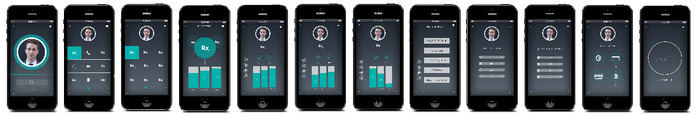

As the co-founder of a healthcare startup, I had many duties including hiring, managing employees, pitching to investors, and planning the development cycle. I also worked to define the user experience that really differentiated us in the market.
Our vision is to reimagine every human health experience through the lens of a mobile device
Me: ideation, mockups, software + hardware prototype development, prototype testing, user interviews, persona development, pitching
Amik Ahmad: ideation
Chris Ha: research, ideation, wireframing, static mockups, user interviews, persona development, pitching
Will McAuliff: software prototype development, pitching
David Krawczyk: industrial design, finished off hardware prototype testing
We all know that the healthcare industry in America has its many issues. We set out to address some of those issues: looking at academic studies, interviewing doctors and other healthcare professionals, talking to patients with chronic issues and their caretakers, we started piecing together some areas in which we could innovate.
We thought about a general solution to these problems.
Essentially, it boiled down to the fact that everyone needs value based care and deserves a seamless, personalized experience. We took on a digital perspective to leverage modern science and technology to innovate through a bottom up approach. Our aim was to create a new market through risk, iteration, and refinement of an emerging market and science where behavior is the medium for our design and technology. We didn't care about the way things were but the ways we could shape reality through design.
One of the big issues with disrupting a massive industry is choosing your battles. Do you try to change the insurance/payment side of things? Is it better to do trials for doctor/patient interfaces at hospitals and private practices? Do you identify a niche need that can be addressed with a simple quantified self solution as an entry vector into other areas of the industry? Do you approach from a patient point of view, innovating how they interface with existing infrastructure? We chose several approaches to tackle and aligned them with potential investment outcomes from our series A.
We wanted our system to enable the user to have immediate control over their data. Taking the data they might already collect from quantified self things (e.g. Fitbit), we could really put that data to use by their healthcare providers and by getting 'healthy lifestyle' discounts from their insurance companies. Continuing from the initial research, we started imagining the types of data people could collect. We also started building out personas for some of our initial target users and use case scenarios that could benefit them.
We really wanted to redefine the way patients interact with their doctors and their healthcare in general. We did a good amount of iterating on novel concept designs for the patient interface. Coming from a more abstract perspective, we tried using general auditory and visual associating to give people an overall picture of their health. This video shows us experimenting with some variables to achieve an instinctual reaction to your health score.
As part of this investigation, we evaluated the performance of SVG and the HTML5 canvas for live background animation. This eventually led to a design that incorporated sound, background animation speed, and color (click the arrow in the lower right to toggle) - the sound is unpleasant for a reason! Here are two more dashboard iterations we tried but with static backgrounds: 1, 2. I coded the prototypes myself and designed the look and feel with my colleague, Amik Ahmad. All prototypes were created from scratch with help from some libraries (Bootstrap, jQuery).
We wanted to create a prototype MVP to illustrate the unique features of our business model. This included scenarios around:
These scenarios were core around our pitch to investors, so it was important to have a demo that could highlight this patient-driven mobile experience. Unfortunately, the novel prototypes didn't play well in usability testing, so we reapproached the design through the lens of these scenarios.
I'll highlight one of these scenarios here: Value Based Health. This is about giving the user the option to evaluate the value of goods (e.g. prescriptions) and services (e.g. procedures) by both qualitative and quantitative means. When building a system that manages so much data, designing it to make as much use of the data is a no-brainer. When dealing with private (HIPAA) data, properly applying known anonymization techniques allows you (with consent) to use the data to help users see what other similar users have chosen for their own care. Here we wireframed a user flow where the user evaluates some procedures, then proceeds to evaluate insurance coverage and payment options.
After establishing the design through the wireframes, paper prototyping, and higher fidelity mockups, I created a final set of prototypes we could run on mobile devices and demo on our site. I created these prototypes with one direct reports, Will McAuliff. See the entire set of pitch prototypes here; complete with a guided narrative!
The prototypes were really useful in pitching our startup. The business eventually merged with another company.
Thanks for checking out this project! See other featured projects and learn more about me
{kind=link}
{kind=link}
{kind=link}
{kind=link}
{kind=link}
{kind=link}
{kind=link}
{kind=link}